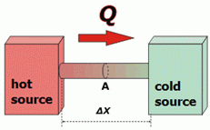

NO ME SALEN
(APUNTES TEÓRICOS DE BIOFÍSICA DEL CBC)
HEAT CONDUCTION – FOURIER'S LAW
|
|

|
| |
Heat conduction is one of the ways heat can be transmitted (the others are radiation and convection). The main characteristic about conduction is that the heat flows through the inside of the material.
In order to study this phenomenon, we will have two source bodies. We call sources to those bodies whose temperature doesn’t vary although they receive or yield heat. The reason why they do not vary their temperature is not very important (for us), but it may be: because they are huge bodies (such as atmosphere's air, the sea, or a river); because they receive some kind of energy supply (like a boiler); because they have their own caloric source (such as mammals), etc.
The "way" in the one the heat flows from one side to another can be quantified by the following quotient:
Q/Δt
which is a magnitude that has no proper name but it is clear that it is a power magnitude, and their most common units will be watts, calories per second, calories per hour, etc.
[Q/Δt] = W, cal/s, cal/h, kcal/h...
|
| |
|  |
Let's focus on the bar that puts the two sources in contact. Heat flows through the inside of the bodies, from the hot source to the cold source.
Pointing some obvious things: heat will flow faster the larger the area, A, of the bar. Heat will flow slower the longer the bar, Δx. In addition, it will flow faster the higher the temperature difference between the sources, ΔT. |
|
|
Remember to use capital T for temperature,
and lowercase t for time.
|
But also, heat will travel faster or slower depending on the material composing the bar. There are materials which are better heat conductors than others, and particularly there are materials so little conductors that we call them insulators. The intrinsic property of the materials that describes its caloric conductivity is called thermal conductivity and is symbolized by the lower case k (several texts use λ).
Everything we have analyzed so far can be summarized in this experimental law called the Fourier Law: |
|
|
|
|
|
The minus sign is because when subtracting temperatures, you always obtain a negative number, since the heat always flows from the higher (initial) temperature to the lower (final) temperature. Check out the huge resemblance to Fick's law, |
|
|
|
|
|
which describes the travel of solute molecules from a solution of higher concentration to a more dilute solution. La lógica del proceso es la misma, pero aquí lo que fluye es energy.
In the following table I listed some constants of thermal conductivity worthy of account. |
|
|
THERMAL CONDUCTIVITY |
liquid water |
0,59 W/m.K |
0,125 cal/m.s.ºC |
ice (at 0ºC) |
2,1 W/m.K |
0,504 cal/m.s.ºC |
| ice (at -100ºC) |
3,5 W/m.K |
0,839 cal/m.s.ºC |
air |
0,024 W/m.K |
0,006 cal/m.s.ºC |
silver |
418 W/m.K |
101 cal/m.s.ºC |
copper |
365 W/m.K |
87,2 cal/m.s.ºC |
iron |
72 W/m.K |
17,3 cal/m.s.ºC |
cork |
0,015 W/m.K |
0,004 cal/m.s.ºC |
| wood * |
0,15 W/m.K |
0,036 cal/m.s.ºC |
| grease * |
0,2 W/m.K |
0,050 cal/m.s.ºC |
| glass * |
1 W/m.K |
0,239 cal/m.s.ºC |
| brick * |
0,80 W/m.K |
0,192 cal/m.s.ºC |
| telgopor * |
0,02 W/m.K |
0,005 cal/m.s.ºC |
vacuum |
0 W/m.K |
0 cal/m.s.ºC |
| Notice that is a bit ridiculous to specify the thermal conductivity of vacuum , since the thermal conductivity is a material characteristic, and it is inappropriate to adjudicate it to the vacuum (absence of matter). However, I include it because it is logical, because I find it didactic and because it reforces concepts. Values marked with an asterisk are approximate. |
|
|
|
|
|
|
|
Curious Facts: |
|
|
-
Mammals' greatest "invention" was fur. Pretend to be homeotherm -that is, a living being who keeps constant its body temperature-, have warm blood, and also live in environments of variable temperature, is not funny if you don't have a good thermal insulation. Mammals chose the best, the most abundant and the cheapest: the air. But in order to "wear" air, you have to be able to catch it and leave it stuck to the skin. That is fur's work. Since our species chose to stay naked (and it seems that was an excellent decision) we replace the air trapped by our own hair, with the air trapped in the clothes.
- Our body's area (the skin) cannot stretch or contract. But we can regulate the portion of area that we expose to the environment, which is the one that exchanges heat with it: we unconsciously adopt postures because of cold temperatures (cross arms and legs, keep arms stuck to the trunk, wind to sleep) or postures because of hot temperature (spread the limbs, pick up our hair ...) which results in effective regulation of exposure.
- When they serve you a heap of mashed potatoes or rice, and it is very hot, and we're a bit rushed to let it cool itself ... What do you do? Surely you squash the heap with the fork and leave several grooves ... right? This increases the contact area with the air (which is at a colder temperature that the food), the heat loss becomes faster and cools earlier. Oh... is that you had already studied Physics, right? And if not ... how did you know?
- To prevent heat loss, one of the most important strategies we put in place is to cool the skin - many times - to the low temperatures of the winter environment. This minimizes or even nullifies the temperature difference between the skin and the environment and stops heat loss. This prodigy mechanism of our Autonomic Central Nervous System (ACNS) is accomplished, basically, with two tricks: first, stopping the blood circulation of the skin; and secondly, by making the blood from the extremities return through the central veins that are attached to the arteries (Concomitant veins) that collect all the heat that the arterial blood otherwise would waste.
- To increase heat loss, one of the most important strategies of our ACNS is the deposition of water on our skin. There's no need for a tap in this case, since our skin is overpopulated with small sweat glands that serve to wet it. The water deposited evaporates, and the steam carries with it the heat we want to get us off. Each gram of evaporated sweat carries 570 calories.
|
|
|
Captious Questions:
|
|
|
-
Why when we are exposed to a current of cold air we say that we got goose bumps?
- Why are hot water thermoses made with double glass and nothing (vacuum) in the middle?
- Why a blanket is useful for warming?
- Why in the nordic countries do house windows have double glazing with a layer of air in between?
- Why do they sell the ice cream telgopor containers?
- Why are the handles of the frying pans metallic but hollow?
- Why do I feel cold in my feet if I walk barefoot on the tiles but not on a carpet, even though the tiles and the carpet are at the same temperature?
|
|
 |
| |
|
 |
| Some rights reserved. Reproduction permitted if quoting the source. Last updated on Dec-16. Translated by Esteban Djeordjian.I thank Vanesa Mamani for sending an erratum. Buenos Aires, Argentina. |
|
|
| | |
|
|